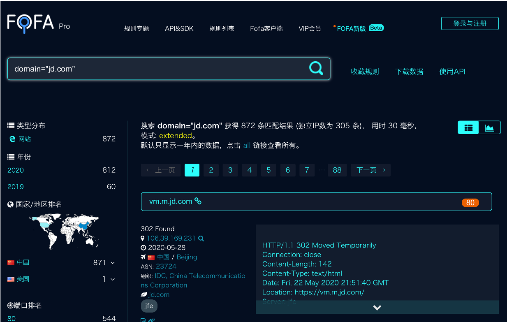

前言
昨天晚上被通知过两天要参与演练，没经验，突击一下，熟悉一下流程
信息收集
大家都说，渗透测试是否成功，很大程度上取决于信息收集
信息收集是指通过各种方式获取所需要的信息，分为主动收集和被动收集
被动收集：不直接与目标接触，通过搜索引擎、威胁情报、社工库等进行，收集的是网络上目标的有关信息并不会直接访问目标
主动收集：与目标系统直接接触，使用受控主机基于扫描器、测试工具等进行探测，无法避免留下访问的痕迹
那要收集什么呢？最简单的比如说目标站点的IP、中间件、脚本语言、端口等等。
收集域名信息
Whois查询
Whois 是用来查询域名的IP以及所有者等信息的传输协议。简单来说，就是一个用来查询域名是否已经被注册，以及注册域名的详细信息的数据库（如域名所有人、域名注册日期等）
1 | whois jd.com |
如何使用？
Kali下自带whois查询
此外还有在线网址：
但要注意的是，得到的结果是域名托管商，查询信息有限
当遇到查询时域名被屏蔽或者不支持查询，可多换几个接口尝试
备案信息查询
ICP备案查询网 http://www.beianbeian.com/
国内网站注册需要向国家有关部门申请备案，防止网站从事非法活动，而国外网站不需要备案，通过查询备案信息可以获得域名的单位信息，从而找到更多的网络资产
子域名信息收集
子域名也就是主域名下的域名。假设我们的目标网络规模比较大，直接从主域入手显然是很不理智的，因为对于这种规模的目标，一般其主域都是重点防护区域。通过子域名可以让我们发现目标更多的资产和服务，更容易找到薄弱点
在线平台
ip138 https://site.ip138.com/
站长工具 http://tool.chinaz.com/subdomain/?domain=
hackertarget https://hackertarget.com/find-dns-host-records/
phpinfo https://phpinfo.me/domain/
t1h2ua https://www.t1h2ua.cn/tools/
dnsdumpster https://dnsdumpster.com/
chinacycc https://d.chinacycc.com/
zcjun http://z.zcjun.com/
搜索引擎
Google语法查询
例如：搜索子域名 “site:xxxxx”
FOFA语法查询：https://fofa.so/
例如：搜索子域名 “domain:xxxxx”

工具枚举
一些常用子域名工具：
OneForAll
一款功能强大的子域收集工具，拥有多个模块和接口扫描，收集子域信息很全，包括子域、子域IP、子域常用端口、子域Title、子域Banner、子域状态等
使用方法：
1 | python3 oneforall.py --target example.com run |
Sublist3r
也是一个比较常用的工具， 它能列举多种资源，如在Google、Yahoo、 Bing、 Baidu和Ask等搜索引擎中可查到的子域名，还可以列出Netcraft、VirusTotal、ThreatCrowd、 DNSdumpster、SSL Certificates、和Reverse DNS查到的子域名
Layer子域名挖掘机
Layer子域名挖掘机的使用方法比较简单，在域名对话框中直接输入域名就可以进行扫描，它的显示界面比较细致，有域名、解析IP、开放端口、Web服务器和网站状态等
subDomainsBrute
特点是可以用小字典递归地发现三级域名、四级域名,甚至五级域名等不容易被探测到的域名
使用方法
1 | python subDomainsBrute.py target.com |
第三方接口
第三方服务汇聚了大量的dns数据集，可以检索某个给定域名的子域名信息
此外还有很多工具，K8、wydomain、dnsbrute、Findomain、fierce等，可自行探索
证书透明度公开日志
证书透明度(Certificate Transparency, CT)是证书授权机构(CA) 的一个项目，证书授权机构会将每个SSL/TLS证书发布到公共日志中。
一个SSL/TLS证书通常包含域名、子域名和邮件地址， 这些也经常成为攻击者非常希望获得的有用信息。查找某个域名所属证书的最简单的方法就是使用搜索引|擎搜索一些公开的CT日志
CT日志查询平台：
crt.sh: https://crt.sh
censys: https://censys.io

myssl：https://myssl.com
DNS域传送漏洞
一般DNS服务器会存在冗余备份，DNS服务器分为：主服务器、备份服务器和缓存服务器。主备服务器之间同步数据库的操作，就叫DNS域传送
域传送是指备份服务器从主服务器拷贝数据，并用得到的数据更新自身数据库
若DNS服务器配置不当，可能导致攻击者获取某个域的所有记录。造成整个网络的拓扑结构泄露给潜在的攻击者，包括一些安全性较低的内部主机，如测试服务器
如何检测？
nslookup（Windows）
（1）nslookup -type=ns xx.yy.cn #查询解析此域名的dns服务器
（2）nslookup #进入交互式shell
（3）server dns.xx.yy.zz #设定查询将要使用的DNS服务器
（4）ls xx.yy.zz #列出某个域中的所有域名
（5）exit
dig（Linux）
（1）dig NS xx.yy.cn #查询解析此域名的dns服务器
（2）dig @dns.xx.yy.cn axfr xx.yy.cn
@指定域名服务器；axfr为域传送指令令；xx.yy.cn表示要查询的域名
服务器信息收集
首先要获得服务器真实ip
如果目标购买了CDN服务，可以直接ping目标的域名，但得到的并非真正的目标Web服务器，只是离我们最近的一台目标节点的CDN服务器，这就导致了我们没法直接得到目标的真实IP
什么是CDN？
CDN的全称是Content Delivery Network，即内容分发网络。其基本思路是尽可能避开互联网上有可能影响数据传输速度和稳定性的瓶颈和环节，使内容传输的更快、更稳定。
通过在网络各处放置节点服务器所构成的在现有的互联网基础之上的一层智能虚拟网络，CDN系统能够实时地根据网络流量和各节点的连接、负载状况以及到用户的距离和响应时间等综合信息将用户的请求重新导向离用户最近的服务节点上。
判断目标是否存在CDN
Ping目标主域
通常通过ping目标主域，观察域名的解析情况，以此来判断其是否使用了CDN
全国Ping
利用全国多地区的ping服务器操作，然后对比每个地区ping出的IP结果，查看这些IP是否一致， 如果都是一样的，极有可能不存在CDN。如果IP大多不太一样或者规律性很强，可以尝试查询这些IP的归属地，判断是否存在CDN
在线网址：
https://tools.ipip.net/newping.php
Nslookup
不同DNS域名解析情况对比，判断其是否使用了CDN，不同DNS解析结果若不一样（若解析结果有多个），很有可能存在CDN服务
在线工具查询
https://www.cdnplanet.com/tools/cdnfinder/
绕过CDN查找真实IP
从子域名入手
很多网站主站的访问量会比较大，所以主站都是挂CDN的，但是分站可能没有挂CDN，可以通过ping二级域名获取分站IP， 可能会出现分站和主站不是同一个IP但在同一个C段下面的情况，从而能判断出目标的真实IP段
利用站点功能
一般的邮件系统都在内部，没有经过CDN的解析，通过利用目标网站的邮箱注册、找回密码或者RSS订阅等功能，查看邮件、寻找邮件头中的邮件服务器域名IP，ping这个邮件服务器的域名，就可以获得目标的真实IP
注意：必须是目标自己的邮件服务器，第三方或公共邮件服务器是没有用的
利用DNS解析记录
一般网站从部署开始到使用cdn都有一个过程，周期如果较长的话，则可以通过这类历史解析记录查询等方式获取源站ip，查看IP与域名绑定的历史记录，可能会存在使用CDN前的记录。
在线网站查询：
https://sitereport.netcraft.com/
国外请求
很多时候国内的CDN对国外得覆盖面并不是很广，故此可以利用此特点进行探测。通过国外代理访问就能查看真实IP了，或者通过国外的DNS解析，可能就能得到真实的IP
利用站点漏洞
通过网站的信息泄露如phpinfo泄露，github信息泄露，SSRF等漏洞获取真实ip
判断操作系统类型
什么是Nmap？
Nmap是一个网络连接端扫描软件，它可以检测主机是否在线、端口开放情况、操作系统类型等信息。它是网络管理员必用的软件之一，以及用以评估网络系统安全
Nmap：使用Nmap检测远程主机上运行的操作系统和版本
1 | nmap -Pn -O xxx.xxx.xxx.xxx |
-Pn不检测主机存活、-O启动操作系统检测
利用操作系统特性：windows不区分大小写，linux对大小写敏感
探测端口开放情况
通过扫描服务器开放的端口以及从该端口判断服务器上存在的服务，就可以对症下药，便于我们渗透目标服务器
常用的端口扫描工具：Nmap、Masscan、御剑高速端口扫描工具
探测主机服务信息
1 | nmap -sV -v xxx.xxx.xxx.xxx |

web应用架构探测
当发现服务器上面运行着多个web应用站点，那我们就可以对这些网站进行信息探测，包括web中间件、服务端脚本语言、数据库、web应用开发框架、web应用指纹等等
通过浏览器插件：Wappalyzer
通过第三方平台：
TideFinger http://finger.tidesec.net/
BugScaner http://whatweb.bugscaner.com/look/
数字观星 https://fp.shuziguanxing.com/#/
web应用敏感信息探测
常见源码泄露
1 | /.git/ |
源码泄露利用工具
.git源码泄露：https://github.com/lijiejie/GitHack
.DS_Store泄露：https://github.com/lijiejie/ds_store_exp
.bzr、CVS、.svn、.hg源码泄露：https://github.com/kost/dvcs-ripper
备份文件泄露
常见备份文件后缀
1 | .bak |
常用的目录扫描工具
DirMap：https://github.com/H4ckForJob/dirmap
dirsearch：https://github.com/maurosoria/dirsearch
Fuzz-wfuzz：https://github.com/xmendez/wfuzz
dirbuster：kali自带
御剑后台扫描
一些好用的字典
https://github.com/fuzzdb-project/fuzzdb
https://github.com/TheKingOfDuck/fuzzDicts
https://github.com/danielmiessler/SecLists
渗透测试工具
留坑
渗透测试主要有四个阶段，分别为信息收集、漏洞分析、渗透、后渗透
如果是开源的cms，可以先去查找一下公开的漏洞，如果有相应的漏洞版本，则入侵就非常容易
漏洞扫描工具
主机漏扫工具：针对目标系统上的所有主机
网站漏扫工具：针对目标主机上的web应用
常见的漏洞扫描工具：
AppScan：网站漏扫工具
awvs：知名的网站漏扫工具
Nessus：最常用的主机漏扫工具（对个人免费，不过有扫描ip数限制）
WPscan：扫描wordpress漏洞
Sqlmap：专注于sql注入漏洞
XssPy：专注于xss漏洞
渗透攻击工具
漏洞利用攻击：利用已有漏洞信息，加载渗透代码，对目标进行渗透利用
代表工具：kali-Metasploit（msf）
社会工程学攻击：采用钓鱼网站、虚假邮件等方式发起社工攻击
代表工具：
SET（Social-Engineer Toolkit）：社会工程学工具集。里面包含了许多用于进行社会工程学攻击的工具
Gophish：是一个功能强大的开源网络钓鱼框架，可以轻松测试组织的网络钓鱼风险，专为企业和渗透测试人员设计
密码攻击：利用字典/密码库/彩虹表等方式，对目标账号或密码进行破解
代表工具：
Hydra：是一款开源的暴力密码破解工具，支持多种协议的破解，包括Web登录、数据库、SSH、FTP等服务，支持Linux、Windows、Mac平台安装，其中Kali Linux中自带Hydra
后渗透攻击工具
代表工具：Metasploit
Metasploit中的Meterpreter模块在后渗透阶段具有强大的攻击力，包含信息收集、提权、注册表操作、令牌操纵、哈希利用、后门植入等
Mimikatz：能够从内存中提取出明文形式的密码，因此在内部渗透测试或者红队行动中被广泛应用
…..